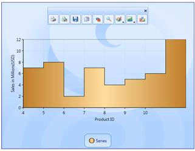
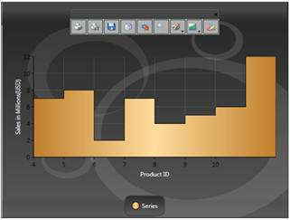
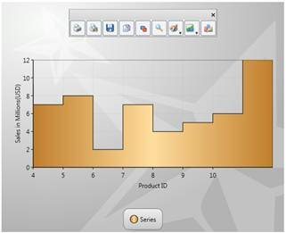
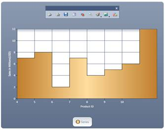
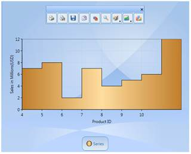
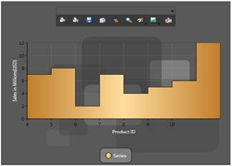
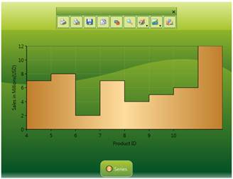
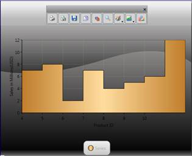
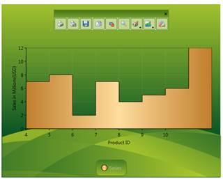

Essential Chart for WPF provides a number of built-in skins that delivers the chart with appealing look and feel with just one property, the VisualStyle property of the class SkinStorage from the Shared.WPF assembly. In addition for the skins getting applied to the window and Window title Bar, the skins will also be applied to all parts of the chart such as Chart Area and Chart Legend.
|
[XAML]
<syncfusion:Chart Grid.Column="0" syncfusion:SkinStorage.VisualStyle="Office2007Blue" > </syncfusion:Chart> |
Required namespace
|
[C#]
using Syncfusion.Windows.Shared;
SkinStorage.SetVisualStyle(Chart1, "Office2007Blue"); |
 Note: Shared.WPF assembly should be referenced in
the project to make use of this settings.
Note: Shared.WPF assembly should be referenced in
the project to make use of this settings.
Various Built-In skins supported are:
· Default
· Blend
· Office2003
· Office2007Blue
· Office2007Silver
· Office2007Black
· CoolBlue
· BlueWave
· BrightGray
· ChocolateYellow
· ForestGreen
· LawnGreen
· MixedGreen
· SpringGreen
· OrangeRed
· VS2010
The following images illustrate the various skins applied to the Chart.

Figure 217: Office2007Blue

Figure 218: Office2007Black

Figure 219: Office2007Silver

Figure 220: VS2010

Figure 221:Office2003

Figure 222: Blend

Figure 223: SpringGreen

Figure 224: BrightGray

Figure 225: LawnGreen